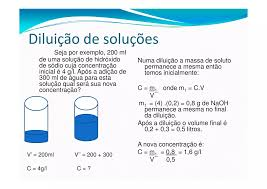
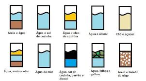
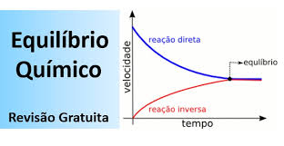
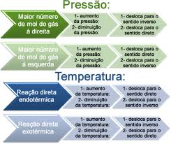
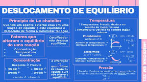
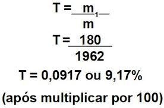
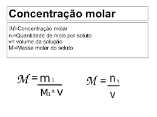

Playlist de Química


Parte por milhão (ppm)
O conceito de Parte por Milhão (ppm) é uma unidade de concentração usada para expressar a presença de um soluto em quantidades ainda mais ínfimas do que o ppm, sendo ideal para medir traços de substâncias em sistemas extremamente diluídos.

Diluição das soluções
O conceito de fator de diluição é um valor numérico simples que indica o quanto uma solução original foi diluída, ou seja, por qual fator a sua concentração foi reduzida. O fator de diluição (FD) é uma razão entre o volume final da solução diluída e o volume inicial da solução concentrada, ou, inversamente, a razão entre a concentração inicial e a concentração final. O fator de diluição é uma forma rápida e universalmente reconhecida de expressar diluições, especialmente em laboratórios de biologia e química, onde se trabalha frequentemente com séries de diluições (diluições seriadas).
Misturas
O conceito químico de mistura descreve a combinação física de duas ou mais substâncias puras (elementos ou compostos) em que cada substância mantém sua identidade química e propriedades. Essa união não envolve reações químicas nem a formação de novas moléculas. Existem dois tipos principais: as homogêneas (soluções), que têm uma única fase e composição uniforme (ex: água salgada), e as heterogêneas, que apresentam fases distintas e visíveis (ex: água e óleo). A principal característica das misturas é que seus componentes podem ser separados por métodos físicos simples, como filtração ou destilação.
Equilíbrio Químico
O Equilíbrio Químico é o estado atingido por uma reação química reversível em um sistema fechado quando as velocidades das reações direta (formação de produtos) e inversa (regeneração de reagentes) se igualam. Atingido este ponto, o sistema alcança um estado de equilíbrio dinâmico: as reações continuam ocorrendo, mas na mesma proporção, de forma que as concentrações de todos os reagentes e produtos se tornam constantes ao longo do tempo, sem que se observem mudanças macroscópicas. A posição do equilíbrio é quantificada pela Constante de Equilíbrio ($\mathbf{K}$), que relaciona as concentrações de produtos e reagentes no estado de equilíbrio e é influenciada apenas pela temperatura.
O Princípio de Le Chatelier é uma regra fundamental em Química que descreve como um sistema em equilíbrio químico dinâmico responde a perturbações externas. Ele afirma que, se uma alteração (ou tensão) é aplicada a um sistema em equilíbrio, o sistema se deslocará espontaneamente no sentido que tende a anular ou minimizar o efeito dessa perturbação, estabelecendo um novo estado de equilíbrio. As perturbações mais comuns são mudanças na concentração dos participantes, na pressão (em sistemas gasosos) e na temperatura. Por exemplo, se adicionarmos mais reagentes, o equilíbrio se desloca para o lado dos produtos para consumir o excesso; se aumentarmos a pressão, ele se desloca para o lado com menor volume gasoso; e se aumentarmos a temperatura, ele se desloca no sentido da reação endotérmica para absorver o calor adicionado. Este princípio é crucial para otimizar processos industriais, como a produção de amônia no Processo Haber-Bosch.
Os Fatores que deslocam o equilíbrio químico são perturbações externas que, ao serem aplicadas a um sistema reversível em equilíbrio, forçam-no a se reajustar para um novo estado de equilíbrio, seguindo o Princípio de Le Chatelier. Existem três fatores principais: a alteração da Concentração de reagentes ou produtos, que move o equilíbrio no sentido de consumir o excesso ou repor o que foi removido; a alteração da Pressão (em sistemas gasosos), que move o equilíbrio para o lado com o menor número de mols gasosos para compensar o aumento de pressão (ou vice-versa); e a alteração da Temperatura, que desloca o equilíbrio favorecendo a reação endotérmica (se a temperatura for aumentada) ou a exotérmica (se diminuída). Destaca-se que a temperatura é o único fator que também altera o valor da Constante de Equilíbrio ($\mathbf{K}$).
O produto iônico da água (Kw) é a constante de equilíbrio para a autoionização da água, que é fundamental para definir e relacionar o pH e o pOH das soluções aquosas.

O Título ou Fração em Massa é uma das formas de expressar a concentração de um soluto em uma solução, sendo definida pela razão entre a massa do soluto e a massa total da solução (soluto + solvente). Por ser uma razão de massas (massa/massa), é uma grandeza adimensional, ou seja, não possui unidades. O Título varia sempre de zero a um. Quando se multiplica o título por $100$, obtemos a porcentagem em massa, que indica a massa de soluto presente em $100$ partes em massa da solução. Este conceito é amplamente usado em química analítica e em processos industriais para garantir a proporção correta de componentes.
A concentração comum e a concentração molar são duas formas de expressar a quantidade de soluto em uma solução, diferenciando-se fundamentalmente pela unidade de medida utilizada para o soluto.
